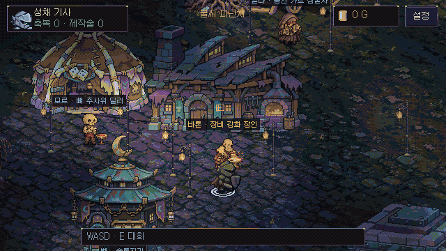

Tracefolio REPORTS & ISSUES
Tracefolio REPORTS & ISSUES 캠프 가디언수정사항
캠프 가디언수정사항마을 건물 입구 등불28개 설치와 NPC 입체조명 연결
검증 대기시설14곳 입구 양옆에 실제 등불을 설치하고 NPC·플레이어와 건물 주변이 같은 광원을 사용하도록 연결했습니다.
작업 결과
건물 등불 배치·공통 광원 연결·저장 및 실제 Godot 렌더 확인 완료.
변경 내용
적용 내용
town.json.facilities[].entrance_lamps에 위치·반경·세기를 저장해 시설14곳에 등불28개를 배치했습니다. 기존 정규화된 가로등 소품을 재사용하고 공통 깊이 정렬/그림자를 연결했습니다. NPC 위치에서 자동 생성하던 가상 광원은 제거했습니다. 실제 전구 위치와 높이를 darkness.gdshader와 actor_relief.gdshader가 공유해 건물 주변 바닥·외벽과 NPC·플레이어 표면에 반영합니다. 화면 광원40개/배우 광원48개로 확대했습니다. 캐릭터의 낮은 주변광과 중앙 모닥불·외곽 암부는 유지했습니다. 아트 방향·제작 절차·스타일·변경 이력을 갱신했고 원본 이미지는 보존했습니다.
검증
Godot4.7.2/GTX970 실제 렌더99프레임/12FPS. facilities=14, entrance_lamps=28, actor_lights=35, normal_cached=22, data_errors=[] 확인. 대장간·상인 등 대표4곳을 렌더하고 대장간/상인 캡처에서 실제 등불 배치·건물 주변 조명·NPC 명암을 확인했습니다. 별도 테스트·회귀는 수행하지 않았습니다.

남은 사항
시설14곳 전체 개별 배치의 사용자 체감·실제 플레이 성능은 미확인입니다. 기존 종료 시 GL텍스처3개 해제 경고가 남습니다. EXE 빌드·게임 배포 미실행. 중앙 보고 푸시·배포·보호 페이지 접근은 최종 상태로 구분합니다. 검증된 제작 규칙은 기존 프로젝트 아트 가이드에 통합했으며 전역 지침 변경은 없습니다.
작업 시간
- 제안 시간: 2026-11-17 19:14:48 KST 시작,5~8분.
- 실제로 완료된 시간: 구현·실제 렌더 확인 2026-11-17 19:17:10 KST, 실측2분22초. 보고 등록은 이후 별도.
- XERJ: 미사용 — rg와 현재 마을 소스·시설 데이터·실제 렌더를 확인했습니다.